Moderne Visualisierung für die easyE4 – einrichten, gestalten, bedienen
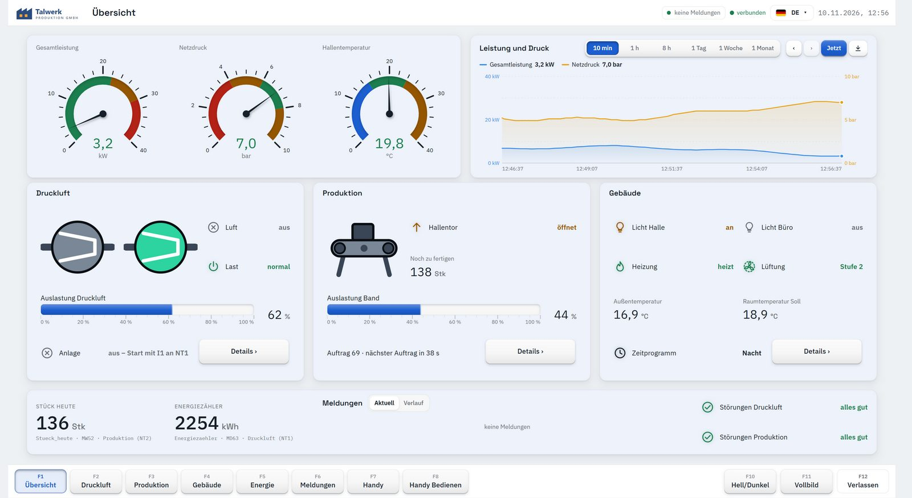
Version 1.0 · November 2026 · easy4visu.de
easyE4, easySoft und Galileo sind Marken der Eaton Corporation. easy4Visu ist ein unabhängiges Projekt und kein Produkt von Eaton.
Inhalt
Erste Schritte Installation, erster Start, Demo Talwerk, Aufbau des Programms
Geräte anlegen Modbus TCP, Webserver, MQTT – und was dafür in easySoft einzustellen ist
Als Bedientafel an der Anlage Autostart, Vollbild, nach Stromausfall
Projekt sichern und übertragen
Hilfe bei Problemen
So ist dieses Handbuch aufgebaut: Jedes Kapitel erklärt eine Aufgabe in kurzen, nummerierten Schritten. Die Bilder stammen aus dem mitgelieferten Demo Talwerk – Sie können alles sofort selbst ausprobieren, auch ohne easyE4.
Kapitel 1
Erste Schritte
easy4Visu verbindet sich mit einer oder mehreren easyE4 und zeigt deren Werte auf Bedienseiten an – am PC, auf dem Tablet oder dem Handy.
Installation
Die Datei easy4Visu-Setup.exe doppelklicken.
Zeigt Windows „Der Computer wurde durch Windows geschützt“: auf Weitere Informationen und dann Trotzdem ausführen klicken. Die Meldung erscheint, weil das Setup nicht mit einem kostenpflichtigen Zertifikat signiert ist.
Den Schritten folgen. Sie brauchen keine weitere Software – kein Node.js, keine Datenbank.
easy4Visu startet am Ende von selbst. Ein Symbol liegt auf dem Desktop und im Startmenü.
Ihre Daten (Geräte, Seiten, Aufzeichnungen) liegen im Ordner %APPDATA%\easy4visu. Eine Neuinstallation oder ein Update lässt sie unberührt.
Der erste Start
Bei einem neuen Projekt öffnet sich die Seite Geräte. Oben zeigt Erste Schritte immer den nächsten Schritt; erledigte Schritte bekommen einen Haken.
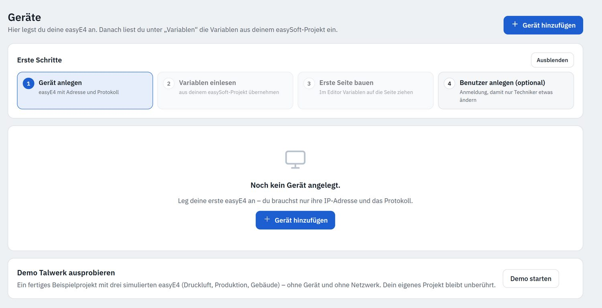
Erste Schritte bei einem neuen Projekt – darunter das Demo Talwerk.
Ausprobieren ohne easyE4: das Demo Talwerk
Mit Demo starten (bei leerem Projekt) oder unter Einstellungen → Demo Talwerk ausprobieren startet easy4Visu neu mit einem fertigen Beispielprojekt: drei simulierte easyE4 für Druckluft, Produktion und Gebäude. Werte bewegen sich, Störungen kommen und gehen, die Trends sind sofort gefüllt.
Gut zu wissen: In der Demo wird nichts gespeichert, Ihr eigenes Projekt bleibt unberührt. Ein gelbes Band oben zeigt an, dass die Demo läuft. Einstellungen → Demo-Modus beenden führt zurück. Mit Demo mit meinem Projekt starten können Sie auch Ihr eigenes Projekt mit simulierten Werten vorführen.
Aufbau des Programms
Links stehen die Arbeitsschritte in der Reihenfolge, in der man ein Projekt baut, darunter die Verwaltung:
Menüpunkt
Wofür
1 Geräte
easyE4 anlegen und verbinden
2 Variablen
Variablen aus easySoft einlesen und bearbeiten
3 Editor
Bedienseiten gestalten
4 Bedienseiten
die fertige Visualisierung bedienen
5 Meldungen
festlegen, welche Bits Störungen, Warnungen oder Meldungen auslösen
Benutzer, Bedienprotokoll
Anmeldung und Rechte; wer hat wann was bedient
Sprachen
Texte in mehreren Sprachen
Handy & Tablet
Bedienseiten im Browser freigeben
Aufzeichnungen
Trends und Meldungen als Tabelle speichern, Aufbewahrung
Projekt
sichern, einspielen, neues Projekt
Einstellungen
Design, Betrieb an der Anlage, Demo, Lizenzen
Oben rechts schalten Sie mit Verbinden / Trennen die Verbindung zu allen Geräten und wählen Hell, Dunkel oder wie Windows.
Kapitel 2
Geräte anlegen
Für jede easyE4 legen Sie ein Gerät an. Jedes Gerät kann eine eigene Verbindung nutzen – Modbus TCP, Webserver oder MQTT lassen sich in einem Projekt mischen.
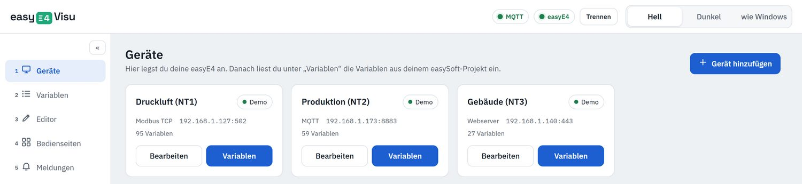
Drei Geräte mit drei verschiedenen Verbindungen.
Geräte → Gerät hinzufügen.
Einen Namen eintragen, z. B. „Druckluft (NT1)“.
Das Protokoll wählen und die Felder ausfüllen (siehe unten).
Verbindung testen – easy4Visu meldet, ob die easyE4 antwortet.
Speichern.
Welche Verbindung?
Verbindung
Wann
In easySoft einstellen
Modbus TCP
schnell und einfach, die übliche Wahl
Modbus-TCP-Server einschalten und die Bereiche freigeben, die die Visu lesen oder schreiben soll
Webserver
wenn Modbus nicht frei ist
Webserver der easyE4 einschalten, Benutzer mit Passwort anlegen (ab Firmware 1.11 auch API-Schlüssel)
MQTT
wenn ein MQTT-Broker vorhanden ist (ab Firmware 2.40)
MQTT einschalten, Broker und Basis-Topic eintragen; unter „Zyklische Daten“ die Operanden auswählen, die gesendet werden
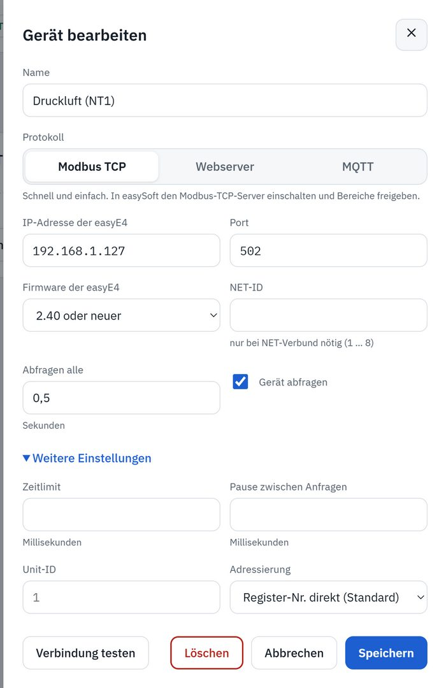
Modbus TCP
Modbus TCP
IP-Adresse der easyE4, Port meist 502.
Firmware der easyE4 – wichtig: davon hängen die Adressen ab. Haben Sie die .itf-Variablenliste, stehen die richtigen Adressen ohnehin darin.
NET-ID nur im NET-Verbund (1 … 8).
Abfragen alle: z. B. 0,5 Sekunden.
Gerät abfragen: Haken weg, um ein Gerät vorübergehend auszuschalten.
Unter Weitere Einstellungen: Zeitlimit, Pause, Unit-ID, Adressierung – normalerweise nicht nötig.
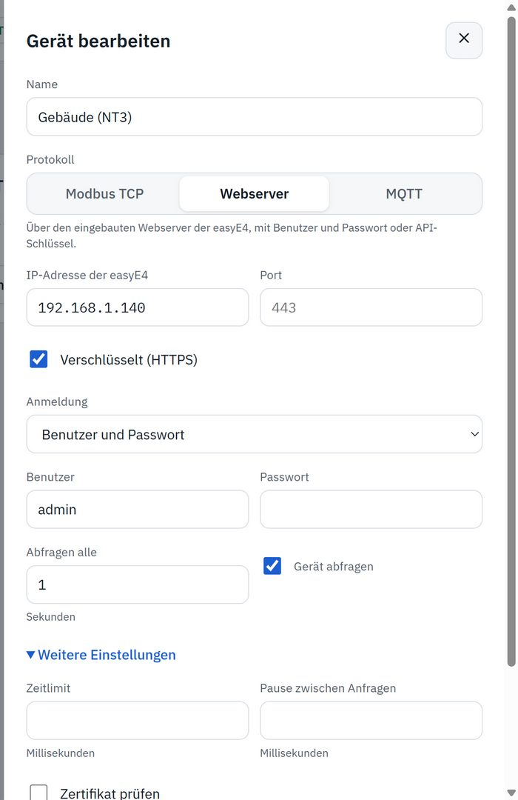
Webserver
Webserver
IP-Adresse, Port meist 443 bei Verschlüsselt (HTTPS).
Anmeldung: Benutzer und Passwort oder API-Schlüssel.
Zertifikat prüfen nur, wenn die easyE4 ein eigenes, vertrauenswürdiges Zertifikat hat.
Ältere Geräte mit Firmware 1.x nutzen eine alte Verschlüsselung – easy4Visu kommt damit von selbst zurecht.
Abfragen alle mindestens 0,5 Sekunden; eine Sekunde ist für Bedienseiten meist ausreichend.
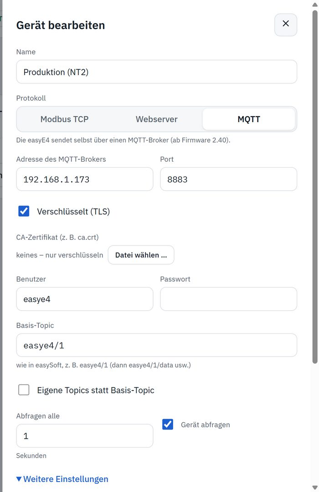
MQTT
MQTT
Adresse des MQTT-Brokers (nicht der easyE4!), Port 1883 oder verschlüsselt 8883.
Verschlüsselt (TLS), optional mit CA-Zertifikat, dazu Benutzer und Passwort des Brokers.
Basis-Topic wie in easySoft, z. B. easye4/1.
Die easyE4 sendet nur, solange sie im RUN ist, und nur die Operanden aus „Zyklische Daten“.
Ein- und Ausgänge sowie einige Systemoperanden lassen sich über MQTT nicht beschreiben.
Passwörter speichert easy4Visu verschlüsselt mit Windows-Mitteln. Sie bleiben auf diesem PC und erscheinen nirgends im Klartext.
Kapitel 3
Variablen einlesen
Register und Adressen muss niemand kennen: easy4Visu übernimmt die Variablen direkt aus Ihrem easySoft-Projekt – mit verständlichen Namen.
Welche Datei aus easySoft?
Datei
Programmiert in
Was sie liefert
.itf Variablenliste
alle (wie für Galileo)
alle freigegebenen Variablen mit den passenden Modbus-Adressen
.csv Symboltabelle
ST
symbolische Namen der Operanden
.txt ST-Programm als Textdatei
ST
das ganze Programm: Operanden, Kommentare, ob gelesen oder geschrieben wird
.xls Operanden-Kommentare
FUP und KOP
die Kommentare der Operanden werden zu Namen
ST-Programm als Textdatei: In easySoft das ganze ST-Programm markieren (Strg+A) und kopieren (Strg+C), in den Windows-Editor einfügen und als Textdatei (.txt) speichern. Diese Datei lesen Sie in easy4Visu ein.
Die Dateien lassen sich kombinieren, z. B. .itf + Symboltabelle oder ST-Programm + Symboltabelle + Kommentare. easy4Visu führt alles zusammen. Ohne .itf berechnet easy4Visu die Adressen selbst aus Operand und Firmware.
So geht's
Variablen, oben das Gerät wählen.
Variablen einlesen … und die Dateien auswählen (mehrere auf einmal möglich).
Die Vorschau zeigt alle gefundenen Variablen und Hinweise. Mit Weitere Dateien hinzufügen … ergänzen Sie z. B. das ST-Programm.
Übernehmen.
Vorschau beim Einlesen: Variablenliste, Symboltabelle und ST-Programm (Textdatei) zusammen – 128 Variablen gefunden.
Erneut einlesen ist jederzeit möglich, z. B. nach einer Programmänderung. Ihre eigenen Änderungen (Anzeigenamen, Einheiten, Umrechnung) bleiben erhalten; easy4Visu meldet, was neu ist und was entfernt wurde.
Die Variablenliste
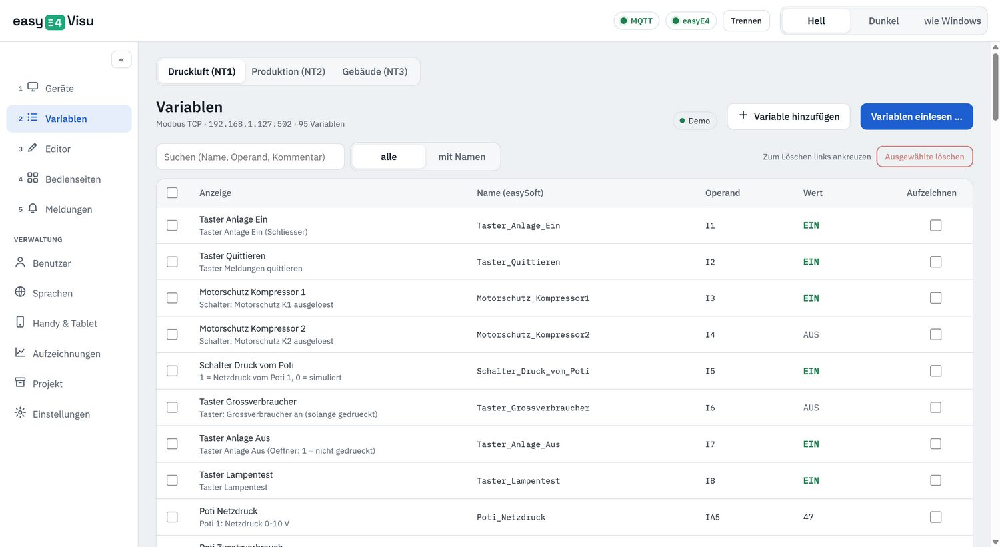
Variablenliste mit Anzeige-Namen, Operand, aktuellem Wert und Häkchen „Aufzeichnen“.
Suchen nach Name, Operand oder Kommentar; mit Namen blendet unbenannte Operanden aus.
Aufzeichnen: Haken setzen, damit die Werte für Trends gespeichert werden (siehe Kapitel 7).
Löschen: links ankreuzen, dann Ausgewählte löschen.
Variable hinzufügen: einen Operanden von Hand anlegen, z. B. MW3 oder bei NET-Partnern 2NW3.
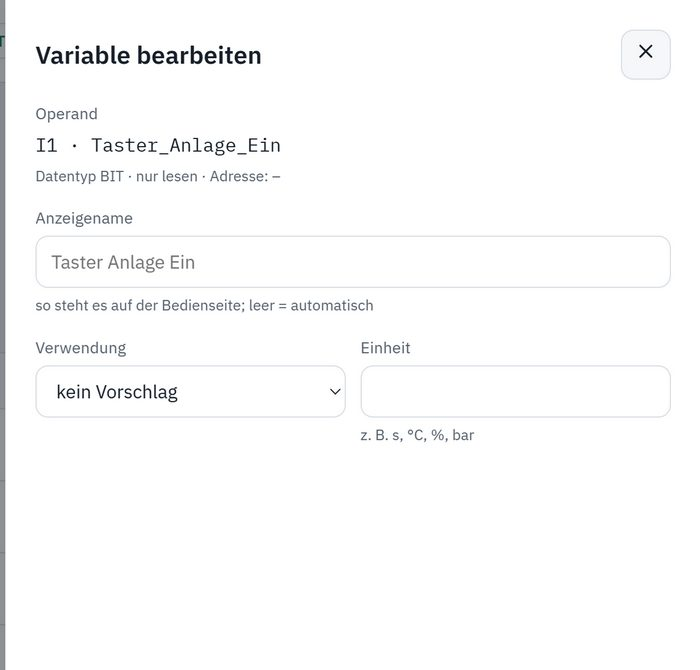
Variable bearbeiten
Variable bearbeiten
Ein Klick auf eine Zeile öffnet die Einstellungen der Variable:
Anzeigename – so steht es auf der Bedienseite.
Verwendung – Vorschlag für Anzeige oder Bedienung.
Einheit, z. B. °C, %, bar.
Umrechnung: Liefert die easyE4 einen Rohwert (z. B. 0 … 1000 für 0 … 10 bar), tragen Sie zwei Punkte ein. Die Visu zeigt dann überall den Wert in der Einheit – auch im Trend – und rechnet Sollwerte beim Schreiben zurück.
Nachkommastellen.
Als Meldung legt für ein Bit gleich eine Störung an.
Kapitel 4
Bedienseiten bauen
Im Editor ziehen Sie Elemente auf die Seite und verbinden sie mit Variablen – wie in einem Zeichenprogramm.
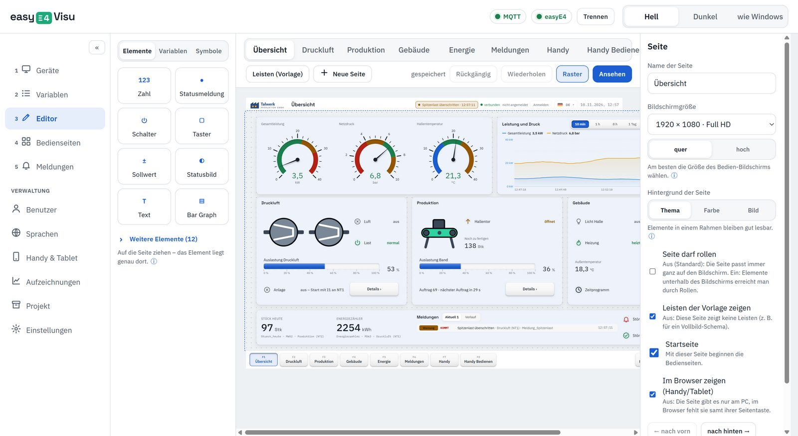
Der Editor: links Elemente, Variablen und Symbole, in der Mitte die Seite, rechts die Einstellungen.
Die erste Seite
Editor öffnen. Oben stehen die Seiten als Reiter, + Neue Seite legt eine weitere an.
Rechts unter Seite Name und Bildschirmgröße wählen – am besten die Größe des Bildschirms, auf dem bedient wird.
Links unter Elemente ein Element auf die Seite ziehen, z. B. ein Zeigerinstrument.
Unter Variablen eine Variable auf das Element ziehen. Oder: eine Variable direkt auf eine freie Stelle ziehen – easy4Visu schlägt das passende Element vor.
Rechts die Einstellungen des Elements anpassen. Alles wird sofort gespeichert.
Mit Ansehen prüfen, wie die Seite im Betrieb aussieht.
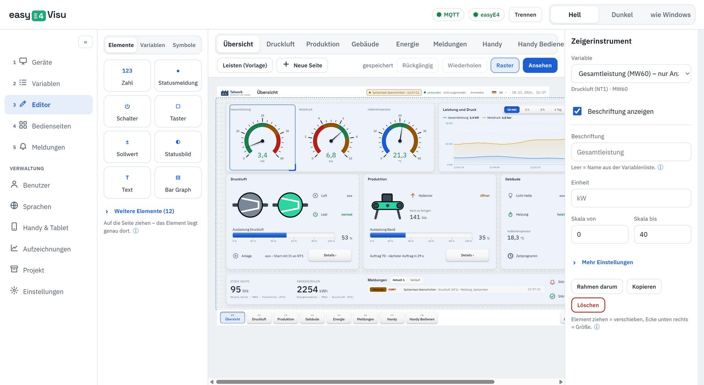
Ein Zeigerinstrument ist gewählt: rechts Variable, Beschriftung, Einheit, Skala; unter „Mehr Einstellungen“ Farbbereiche, Striche, Schriftgröße, Sichtbarkeit.
Die Elemente
Element
Wofür
Zahl, KPI-Kachel
Messwerte; die KPI-Kachel groß für wichtige Kennzahlen
Statusmeldung, Statustext
Zustände mit Farbe, Symbol und Text (z. B. „läuft“, „Störung“)
Schalter, Taster
Ein/Aus schalten; Taster tastend, rastend oder als Impuls, auch als Leuchttaster mit Rückmeldung
Sollwert, Schieberegler
Werte vorgeben, mit Grenzen und Schrittweite
Betriebsart
Auswahl wie Aus / Hand / Automatik
Bar Graph, Zeigerinstrument
Werte mit Skala, Farbbereichen und Strichen
Trend
Verlauf von bis zu vier Variablen über Minuten bis Monate
Meldungsliste
aktuelle Meldungen und Verlauf, mit Quittieren
Bild, Statusbild
Logos und Anlagenbilder; das Statusbild wechselt mit dem Wert
Text, Rahmen
Beschriftungen; Rahmen fassen Elemente zusammen
Funktionstaste
Seite wechseln, Hell/Dunkel, Vollbild, Wert schreiben, Sprache, Anmelden …
Uhr, Gerätekarte, Sprachauswahl
Uhr der easyE4, Verbindungsstatus eines Geräts, Sprache wählen
Arbeiten auf der Seite
Verschieben mit der Maus oder den Pfeiltasten (10 Bildpunkte, mit Alt 1). Größe an der Ecke unten rechts.
Mehrere wählen: Strg+Klick oder auf freier Fläche einen Rahmen aufziehen. Dann ausrichten oder gleich groß machen.
Rahmen: Was ganz in einem Rahmen liegt, wandert mit und wird mit kopiert. Rahmen darum legt einen Rahmen um gewählte Elemente.
Beschriftung kommt automatisch aus dem Anzeigenamen; mit Beschriftung anzeigen lässt sie sich ausblenden.
Sichtbarkeit (unter Mehr Einstellungen): Ein Element erscheint nur, wenn eine Bedingung stimmt – z. B. ein Hinweis nur bei Störung.
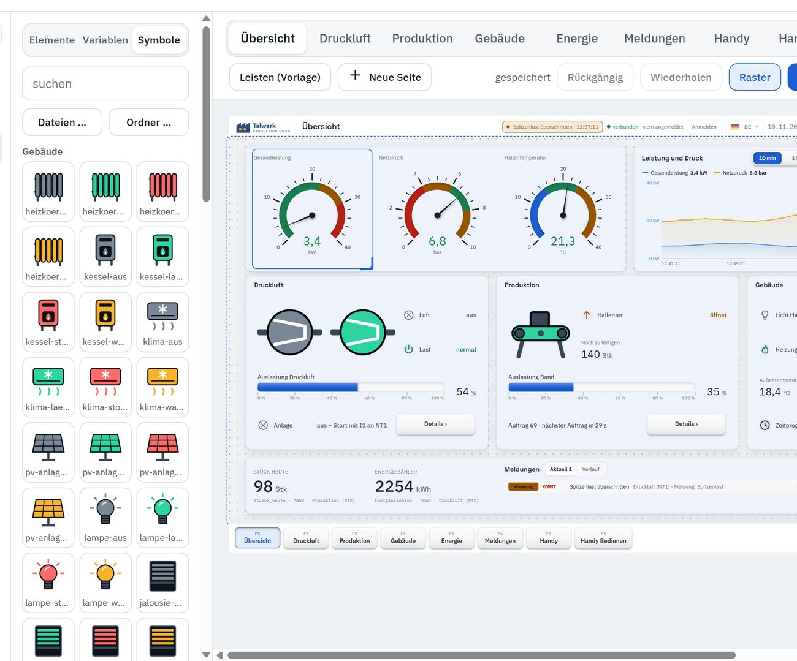
Symbolbibliothek im Editor
Symbole
Unter Symbole liegen fertige Anlagenbilder – Kompressor, Förderband, Heizung, Klima, PV, Licht, Jalousie, Rolltor, Tür und mehr – jeweils in den Zuständen aus, läuft, Warnung und Störung.
Ziehen Sie ein Symbol auf die Seite und wählen Sie rechts Statusbild: Dann wechselt das Bild automatisch mit dem Wert der Variable. Eigene Bilder (SVG, PNG, JPG) fügen Sie mit Dateien … oder Ordner … zu „Meine Symbole“ hinzu.
Leisten und Funktionstasten
Leisten (Vorlage) bearbeitet die Leisten, die auf allen Seiten erscheinen – oben, unten, links oder rechts. Typisch: oben Logo, Seitentitel, Meldungszeile, Verbindung, Anmeldung, Sprache und Uhr; unten die Seitentasten F1, F2 … und Funktionstasten für Hell/Dunkel, Vollbild und Verlassen. Die F-Tasten funktionieren auch auf der Tastatur.
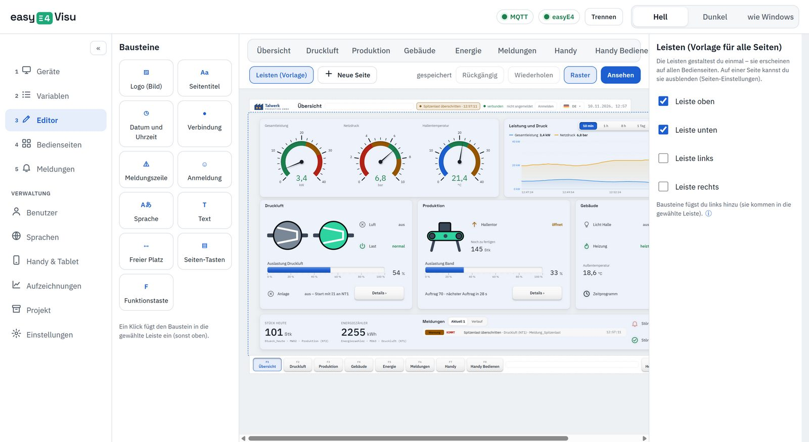
Leisten bearbeiten: links die Bausteine, rechts welche Leisten gezeigt werden.
Tipp: Unter Einstellungen → Automatische Bedienseite erstellt easy4Visu aus den Variablen eines Geräts eine fertige Seite – ganz ohne Editor. Praktisch für die Inbetriebnahme.
Kapitel 5
Design
Das Design gilt für alle Bedienseiten auf einmal: Einstellungen → Design bearbeiten …
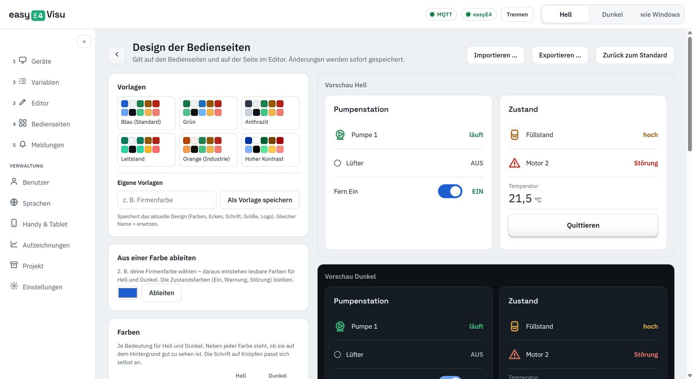
Design der Bedienseiten mit Vorschau hell und dunkel.
Vorlagen: Blau, Grün, Anthrazit, Leitstand, Orange (Industrie), Hoher Kontrast. Eigene Vorlagen lassen sich speichern, exportieren und auf einem anderen PC importieren.
Aus einer Farbe ableiten: Ihre Firmenfarbe wählen – easy4Visu leitet daraus lesbare Farben für Hell und Dunkel ab. Die Zustandsfarben (Ein, Warnung, Störung) bleiben.
Farben einzeln einstellen; neben jeder Farbe steht, ob sie auf dem Hintergrund gut zu sehen ist.
Ecken, Schrift, Größe („groß“ für Bedientafeln, die man aus Abstand liest) und Tiefe: flach oder leicht plastisch.
Logo: als Baustein in der Leiste, auf Wunsch mit eigener Fassung für das dunkle Design.
Hell oder dunkel wählt jeder Bediener selbst – mit der Funktionstaste Hell/Dunkel oder automatisch wie Windows.
Kapitel 6
Bedienen
Unter Bedienseiten läuft die fertige Visualisierung. Dieses Kapitel ist auch für Bediener gedacht.
Eine Bedienseite: oben die Leiste mit Meldungszeile, Verbindung, Sprache und Uhr, unten die Seitentasten.
Seiten wechseln mit den Tasten unten oder F1 … F12.
Schalter, Taster, Sollwerte wirken sofort auf die easyE4. Sollwerte tippen oder mit – / + ändern.
Meldungszeile oben: die neueste Meldung, mit Quittieren.
Verbindung: „verbunden“ grün; fällt ein Gerät aus, werden seine Werte als veraltet markiert.
Vollbild mit F11, Bedienmodus verlassen mit Esc (sobald es Benutzer gibt, nur als Techniker).
Trends
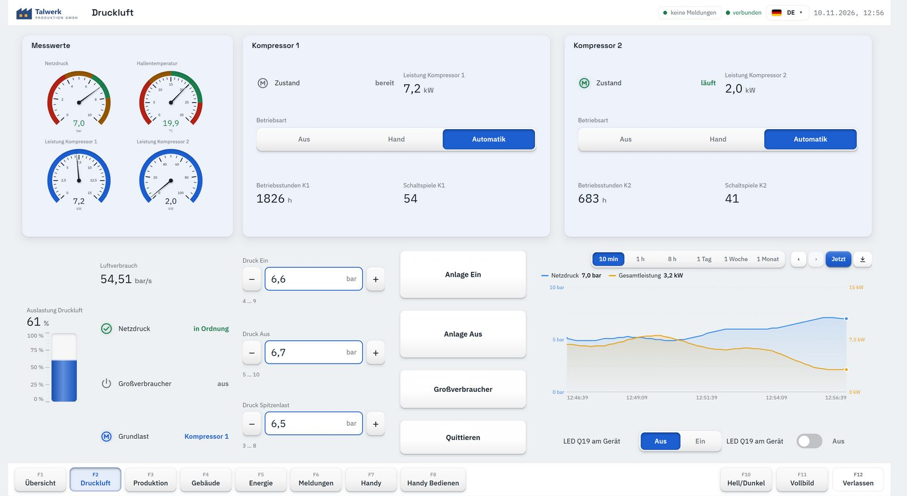
Seite mit Zeigerinstrumenten, Betriebsarten, Sollwerten und Trend.
Am Trend wählen Sie den Zeitraum (10 min bis 1 Monat), blättern mit ‹ › zurück und vor und springen mit Jetzt zur aktuellen Zeit. Der Pfeil speichert die Werte als Tabelle.
Meldungen
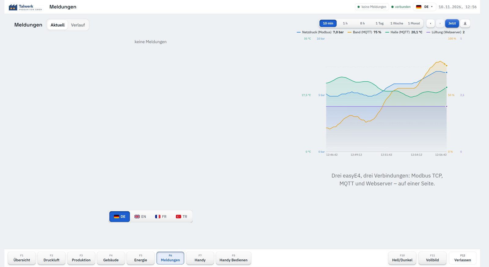
Meldungsliste: Aktuell und Verlauf.
Stufe
Verhalten
Störung (rot)
bleibt in der Liste, bis sie quittiert ist
Warnung (gelb)
verschwindet von selbst, wenn die Ursache weg ist
Meldung (blau)
Hinweis, verschwindet von selbst
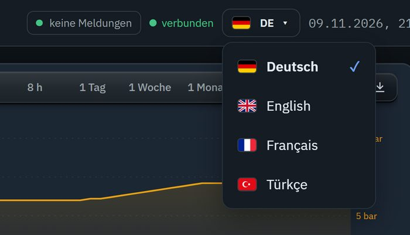
Sprache wählen
Sprache
Über den Sprachknopf in der Leiste, eine Funktionstaste oder die Sprachauswahl auf der Seite wählt jeder Bediener seine Sprache. Ab drei Sprachen öffnet sich eine Liste mit Flaggen.
Kapitel 7
Meldungen, Aufzeichnungen und Sprachen einrichten
Meldungen festlegen
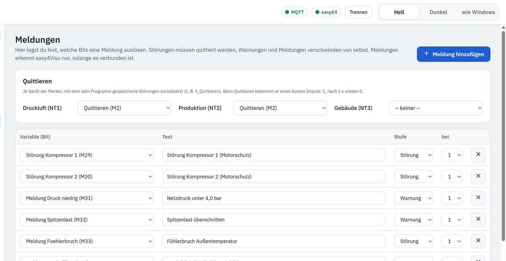
Meldungen: je Bit ein Text und eine Stufe; oben der Quittier-Merker je Gerät.
Meldungen → Meldung hinzufügen (oder in der Variablenliste bei einem Bit Als Meldung).
Die Variable (Bit) wählen, den Text eintragen, die Stufe wählen und ob die Meldung bei 1 oder 0 kommt.
Oben je Gerät den Quittier-Merker wählen, mit dem Ihr Programm gespeicherte Störungen zurücksetzt. Beim Quittieren bekommt er einen kurzen Impuls.
Meldungen erkennt easy4Visu nur, solange es verbunden ist. Für eine Überwachung rund um die Uhr läuft easy4Visu deshalb am besten auf einem PC, der immer an ist (Kapitel 10).
Aufzeichnungen
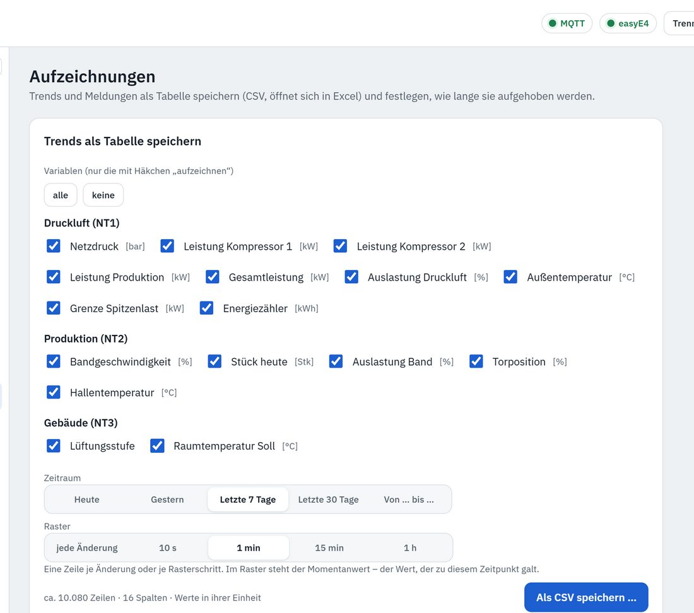
Aufzeichnungen
Die Datenbank ist eingebaut – nichts zusätzlich zu installieren. Aufgezeichnet werden alle Variablen mit Haken Aufzeichnen. Ziehen Sie eine Variable in einen Trend, setzt sich der Haken von selbst.
Trends als Tabelle: Variablen, Zeitraum und Raster wählen, Als CSV speichern … – öffnet sich in Excel.
Meldungsverlauf als Tabelle: mit Kommt, Geht, Quittiert.
Aufbewahrung: wie lange Trends, Meldungen und Bedienprotokoll aufgehoben werden.
Sprachen
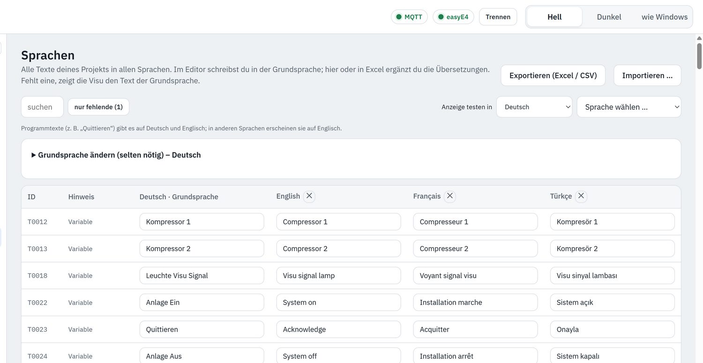
Alle Texte des Projekts in einer Tabelle.
Sprachen → Sprache wählen … eine Sprache hinzufügen.
Die Übersetzungen in der Tabelle eintragen – oder mit Exportieren (Excel / CSV) an einen Übersetzer geben und mit Importieren … zurückholen.
Mit Anzeige testen in prüfen, wie die Seiten in der neuen Sprache aussehen. nur fehlende zeigt, was noch zu übersetzen ist.
Im Editor schreiben Sie immer in der Grundsprache. Fehlt eine Übersetzung, erscheint der Text der Grundsprache. Die festen Texte von easy4Visu gibt es auf Deutsch und Englisch.
Kapitel 8
Benutzer, Rechte und Bedienprotokoll
Solange kein Benutzer angelegt ist, ist alles offen. Mit dem ersten Techniker gilt die Anmeldung.
Benutzer → Benutzer anlegen: zuerst einen Techniker.
Name, Rolle und Passwort und/oder PIN (4–8 Ziffern; am Touch-Panel schneller).
Unter Anmeldung festlegen, was ohne Anmeldung erlaubt ist, und nach wie vielen Minuten abgemeldet wird.
Empfehlung: Legen Sie einen zweiten Techniker an, z. B. für die Vertretung. Ist das einzige Techniker-Passwort vergessen, hilft nur der Notfall-Zugang: easy4Visu als Windows-Administrator mit der Startoption --notfall starten und dort ein neues Passwort setzen.
Bedienprotokoll
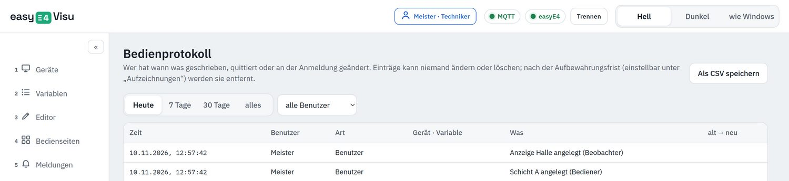
Bedienprotokoll
Wer hat wann was geschrieben, quittiert oder an der Anmeldung geändert – mit altem und neuem Wert. Einträge kann niemand ändern oder löschen. Als CSV speichern exportiert alles.
Kapitel 9
Handy und Tablet
Die Bedienseiten lassen sich im Browser auf Handy, Tablet oder einem anderen PC im selben Netzwerk öffnen – ohne App.
Zuerst unter Benutzer einen Techniker anlegen – im Browser geht es nur mit Anmeldung.
Handy & Tablet → Im Netzwerk bereitstellen.
Fragt Windows nach der Firewall: Zulassen für private Netzwerke wählen.
Die angezeigte Adresse im Browser öffnen oder den QR-Code mit der Handy-Kamera abscannen.
Mit Ihrem easy4Visu-Benutzer anmelden.
Eigene Startseiten für Handy und Tablet sind möglich.
Im Editor legen Sie mit Im Browser zeigen fest, welche Seiten im Browser erscheinen.
Für das Handy lohnen eigene, schmale Seiten mit großen Werten und Tasten (Bildschirmgröße „hoch“).
Editor und Verwaltung gibt es nur am PC.
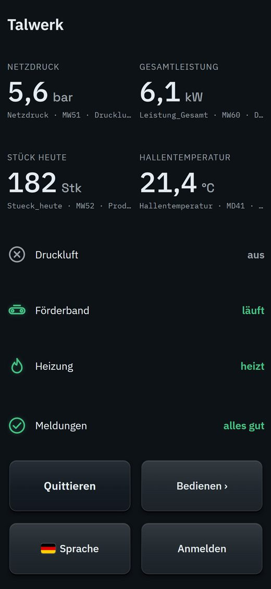
Handy-Seite im Browser
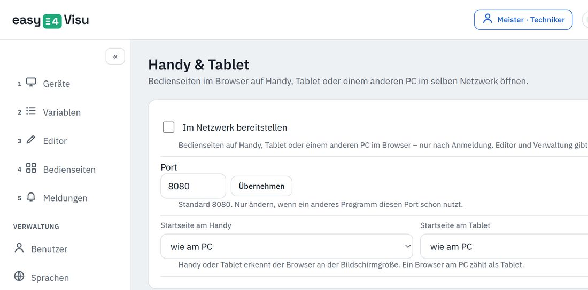
Handy & Tablet: Freigabe, Port und Startseiten.
Die Verbindung im Browser ist unverschlüsselt (HTTP). Nutzen Sie sie nur im lokalen Netzwerk (LAN/WLAN) und geben Sie sie nicht ins Internet frei. Der PC muss eingeschaltet sein und darf nicht in den Ruhezustand gehen.
Kapitel 10
Als Bedientafel an der Anlage
Auf einem Panel-PC soll easy4Visu von selbst starten, sich verbinden und im Vollbild laufen.
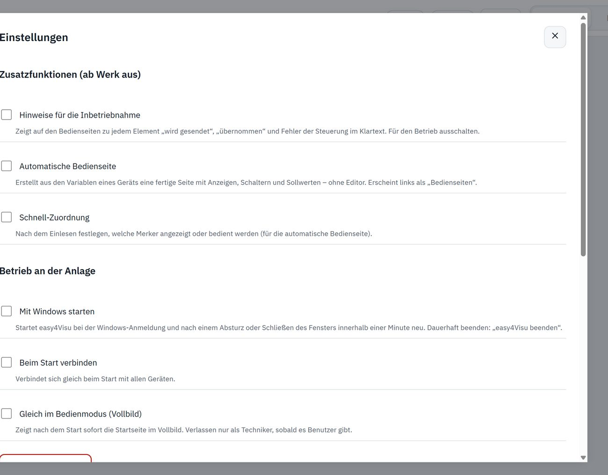
Einstellungen: Zusatzfunktionen und Betrieb an der Anlage.
Einstellungen → Mit Windows starten einschalten. easy4Visu startet dann bei der Windows-Anmeldung und nach einem Absturz oder Schließen des Fensters innerhalb einer Minute neu.
Die Frage „auch Beim Start verbinden und Gleich im Bedienmodus einschalten?“ mit Ja, alles einschalten bestätigen.
Benutzer anlegen (Kapitel 8), damit nur Techniker den Bedienmodus verlassen können.
Nach einem Stromausfall
Damit der PC nach einem Stromausfall von selbst wieder hochfährt:
Im BIOS des PCs „nach Stromausfall einschalten“ (Restore on AC Power Loss) aktivieren.
Energiesparen und Ruhezustand ausschalten.
Beenden:Einstellungen → easy4Visu beenden beendet easy4Visu dauerhaft (nur Techniker). Fenster schließen, Alt+F4 oder der Task-Manager gelten dagegen als Ausfall – mit „Mit Windows starten“ kommt easy4Visu nach höchstens einer Minute wieder.
Weitere Einstellungen
Hinweise für die Inbetriebnahme: zeigt auf den Bedienseiten „wird gesendet“, „übernommen“ und Fehler der Steuerung im Klartext. Für den Betrieb ausschalten.
Automatische Bedienseite und Schnell-Zuordnung: fertige Seiten ohne Editor.
Lizenzen anzeigen: die Lizenz von easy4Visu und der mitgelieferten Bausteine.
Kapitel 11
Projekt sichern und übertragen
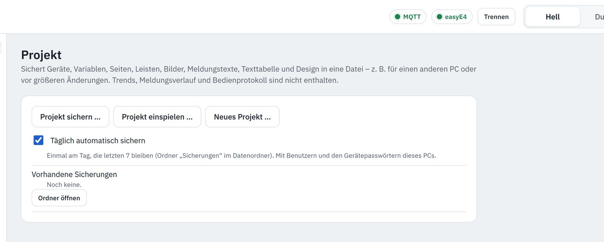
Projekt: sichern, einspielen, neues Projekt.
Sichern
Projekt → Projekt sichern …
Wählen, ob Benutzer und Gerätepasswörter mitgesichert werden. Gerätepasswörter nur mit eigenem Kennwort für die Datei.
Die Datei *.easy4visu speichern – z. B. auf einem USB-Stick.
Gesichert werden Geräte, Variablen, Seiten, Leisten, Bilder, Meldungstexte, Texte und Design. Trends, Meldungsverlauf und Bedienprotokoll sind nicht enthalten. Zusätzlich legt easy4Visu mit Täglich automatisch sichern jeden Tag eine Sicherung an und hebt die letzten sieben auf.
Auf einem anderen PC einspielen
easy4Visu auf dem neuen PC installieren.
Projekt → Projekt einspielen … und die Sicherung wählen.
Die Vorschau zeigt den Inhalt. Kennwort eingeben, wenn Gerätepasswörter enthalten sind – oder die Passwörter danach neu eintragen.
Jetzt einspielen. Der bisherige Stand wird vorher automatisch gesichert, easy4Visu startet neu.
Neues Projekt … beginnt mit einem leeren Projekt; auch hier wird der bisherige Stand vorher gesichert.
Kapitel 12
Hilfe bei Problemen
Was passiert
Was tun
Gerät „keine Verbindung“
IP-Adresse und Port prüfen; easyE4 und PC im selben Netzwerk? Mit Verbindung testen und z. B. einem Ping prüfen. Bei Modbus: ist der Modbus-TCP-Server in easySoft eingeschaltet und das Programm übertragen?
Modbus: Fehler „Exception 2“ oder einzelne Werte fehlen
Ein angefragter Bereich ist in easySoft nicht freigegeben. Bereiche in easySoft freigeben oder die passende .itf-Datei einlesen. Ebenso prüfen, ob die eingestellte Firmware stimmt.
Modbus: schreiben geht nicht
Ein- und Ausgänge lassen sich nicht beschreiben – das Programm muss einen Merker auswerten. Ist der Bereich zum Schreiben freigegeben?
Webserver: „Anmeldung fehlgeschlagen“
Benutzer und Passwort der easyE4 prüfen. Der API-Schlüssel funktioniert nicht für den Benutzer „admin“.
MQTT: keine Werte
Adresse des Brokers (nicht der easyE4), Port, TLS, Benutzer und Basis-Topic prüfen. Die easyE4 sendet nur im RUN und nur Operanden aus „Zyklische Daten“. Ab Firmware 2.40.
Werte sind grau / „veraltet“
Die Verbindung zum Gerät ist unterbrochen; easy4Visu verbindet sich von selbst neu.
Wert stimmt nicht (Faktor 10, 100 …)
In der Variable eine Umrechnung eintragen (Kapitel 3). Zeitwerte von Zeitrelais hängen vom Zeitbereich des Bausteins ab.
Am Gerät wird es träge
Ist parallel easySoft online verbunden? Das verlangsamt die easyE4 merklich. Sonst das Abfrage-Intervall erhöhen.
Handy findet die Visu nicht
Gleiches Netzwerk? Firewall-Frage mit „Zulassen“ beantwortet? Ist unter Handy & Tablet „Im Netzwerk bereitstellen“ an und der PC nicht im Ruhezustand?
Techniker-Passwort vergessen
Zweiten Techniker nutzen – oder den Notfall-Zugang (Kapitel 8).
easy4Visu startet nach dem Beenden nicht wieder
Nach „easy4Visu beenden“ startet es mit „Mit Windows starten“ erst nach dem nächsten Neustart des PCs – oder über das Symbol auf dem Desktop.